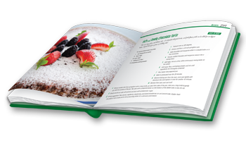
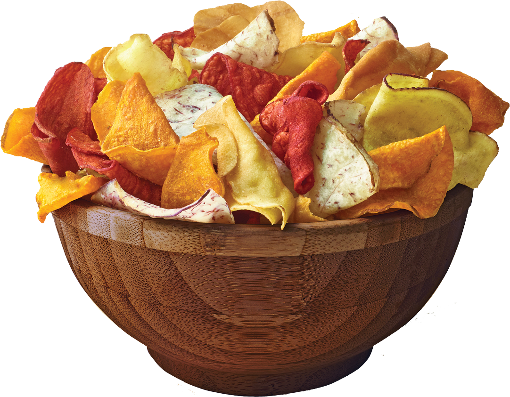
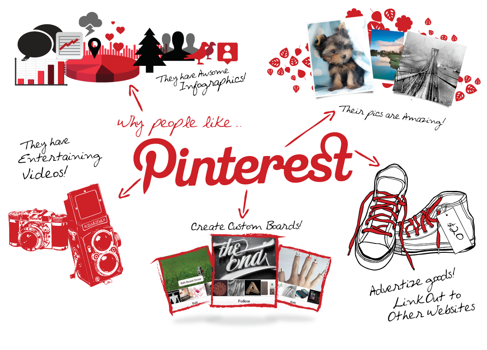
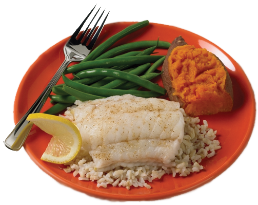

2012's Best Summer CookBooks
With the best of the season coming from “orchards, farms and gardens,” NPR has put together an impressive collection of 10 summer cookbooks.
May 23, 2012 ⁄Read»

About a month ago, I ate almost an entire box of kale chips. My brother and I were visiting our cousin in Brooklyn, and before a very thoughtfully prepared vegan…
October 09, 2014 ⁄Read»

If I could curate a cookbook for you, this would be it.
March 09, 2013 ⁄ Read»

I could not figure out what to do with the delectable slices of Pear Cake that I brought home from this wonderful Sunday supper - eat them slowly, a little bit at…
August 09, 2016 ⁄Read»